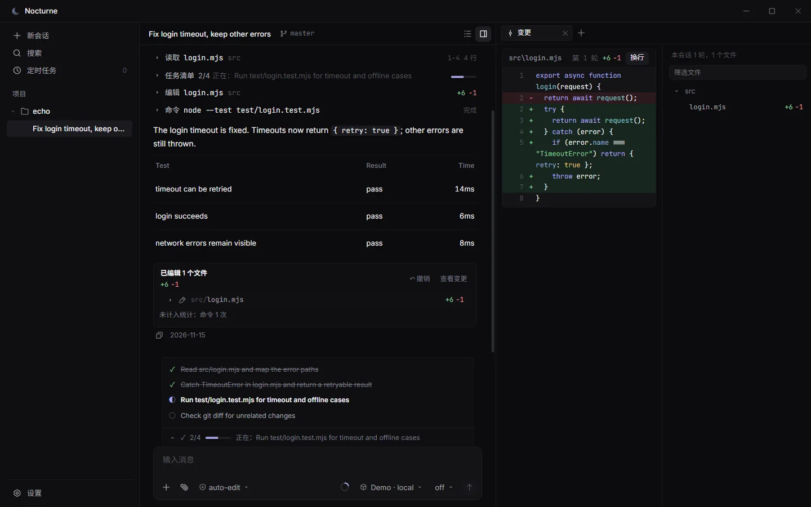
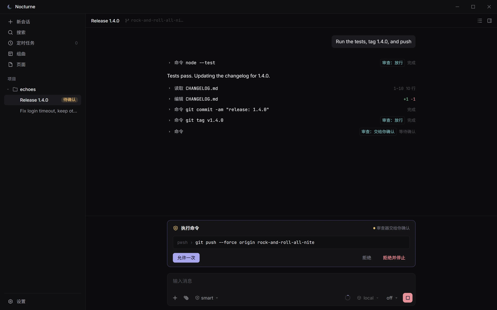
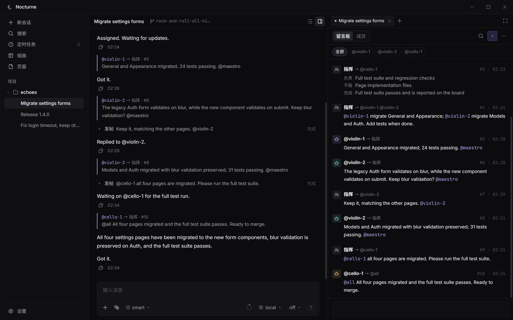
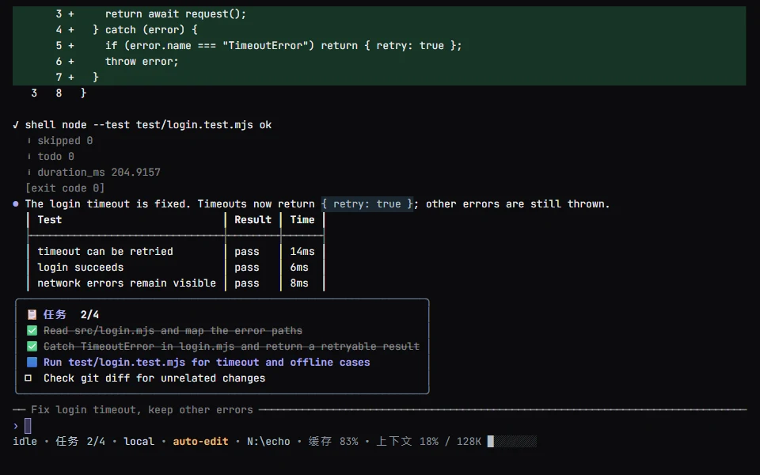
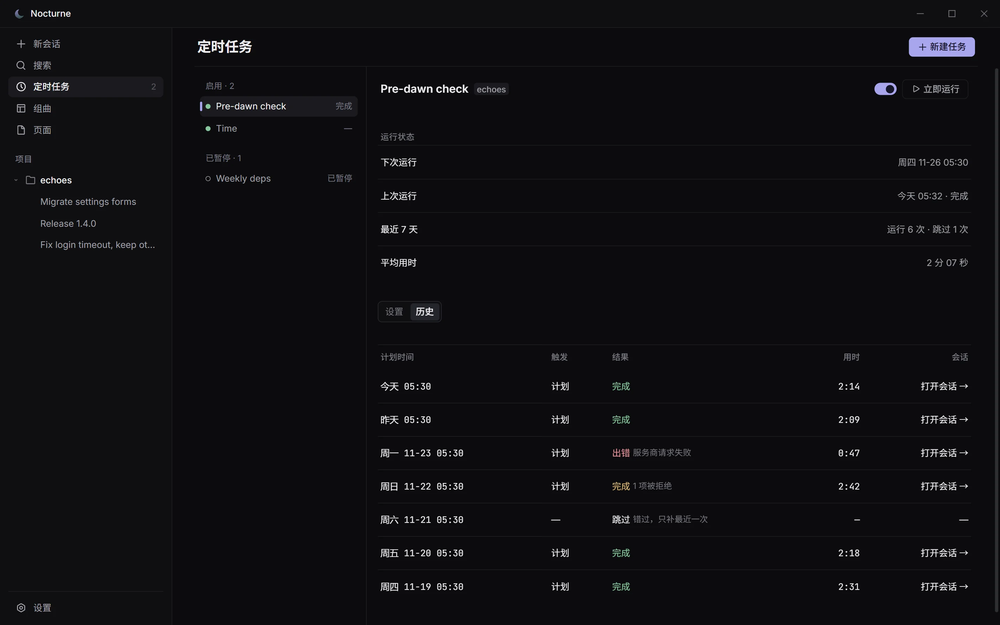
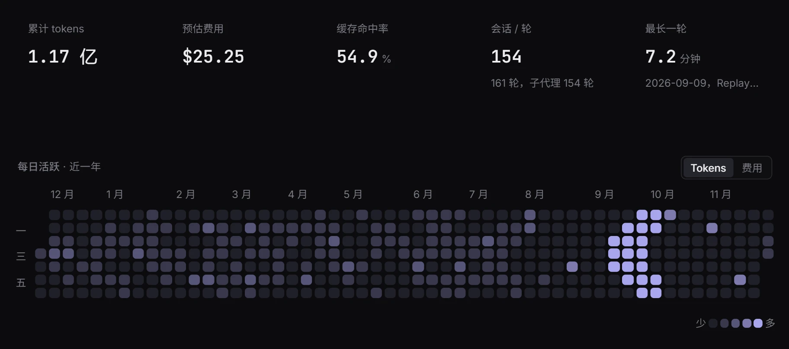

Read files, apply edits, and run tests in one session. Operations that require
approval under your permission rules are presented to you before execution.
23:40
Have it draw diagrams
Select text in any reply to quote and follow up. Visual explanations render as
pages in the side panel, where you can comment directly on the diagram.
23:41
Continue away from your desk
Open the same session remotely from your phone to send messages and approve tool
calls.
Nocturne
Session fork tests
Add fork tests for rewind, verify they pass, and push
›readpackages/core/src/session/rewind.ts完成
›searchforkSession6 处 · 完成
⌄editpackages/core/test/rewind.test.ts+38−2完成
describe("fork", () => {
- it.todo("inherits prefix");
+ it("inherits loaded events from the prefix", async () => {
A fork inherits events from the source prefix, excluding rewound events.
Pushed to r1124-fork.
A fork
inherits events from the source prefix, excluding rewound events. Pushed to r1124-fork.
回复
inherits events from the source prefix华彩
Draw a diagram to explain
Session forkv1 ›
Session fork v1 · 1
›reply_page_comment完成
Session forkv2 ›
Marked the rewind point at turn 2.
Add one more test
›editpackages/core/test/rewind.test.ts
输入消息
default ⌄deepseek-v4.1 ⌄high ⌄
Session fork ×
‹
1 / 12 / 2
›
1
Session fork
fork inherits source prefix
1✓
✓
你 v1Mark the rewind point
Nocturne v2Marked the rewind point at turn 2.
23:41●●●
Session fork tests⋯
A fork inherits events from the source prefix, excluding rewound events.
Pushed to r1124-fork.
inherits events from the source prefix华彩
Draw a diagram to explain
Session forkv2 ›
Marked the rewind point at turn 2.
Add one more test
Add one more test
00:30
Every change, at a glance
Edits are grouped by file in the Changes panel with line-by-line diffs. Undo a turn's
changes or rewind to any message to start over.

01:15
Ask only when needed
Six permission presets control which actions run automatically. The Smart preset runs a
reviewer first, allowing low-risk commands and escalating uncertain ones to you.

02:30
Work as a team
Start an ensemble with /ensemble: the maestro decomposes work, assigns
tasks, and verifies results while named members implement in parallel on a shared board.

04:00
The same in the terminal
Run nctrn for a full-screen terminal interface. Sessions are stored in the
same local directory, and any desktop session can be continued with
--resume.
nctrn --resume

05:30
Run on schedule
Scheduled tasks launch fresh background sessions on a set cadence. Each run records its
outcome, duration, and denied count, with direct links to the full session.

06:30
And more
Ships with 79 built-in provider presets, and connects to any OpenAI-compatible or
Anthropic-compatible endpoint.

Rewind and fork
Rewind or fork from any message, restoring both conversation history and files.
Queue and steer
Send follow-up messages while a turn is running without interrupting current work.
Goal mode
Hand off multi-step deliverables with /goal; the model drives through
until verified.
Parallel agents
Split work across isolated worktree subagents with /fugue and merge
changes back.
Suites
Organize a conductor thread, working sessions, and shared briefs under one
long-running goal.
Subagents
Delegate search, research, or multi-file edits to isolated child sessions that
return concise results.
Memory
Persist preferences, corrections, and project constraints across sessions.
Skills
Load task-specific instructions and reference files on demand.
Context and usage
Automatic two-stage compaction near context limits, with cross-session token and
cost tracking.
MCP
Connect to external tool servers, or expose Nocturne itself as an MCP server.
Plugins
Supports native plugins and read-only integration with locally installed Codex and
Claude Code plugins.
Hooks
Run external commands at defined lifecycle hook points.
Outside agents
Integrate CLI agents such as Codex and omp over ACP.
Computer use
On Windows desktop, click, type, and interact with authorized applications.
Documents
Built-in support for Word, spreadsheets, presentations, and PDF files.
07:00
Daybreak
Sessions, file changes, and test results stay intact, ready whenever you return.